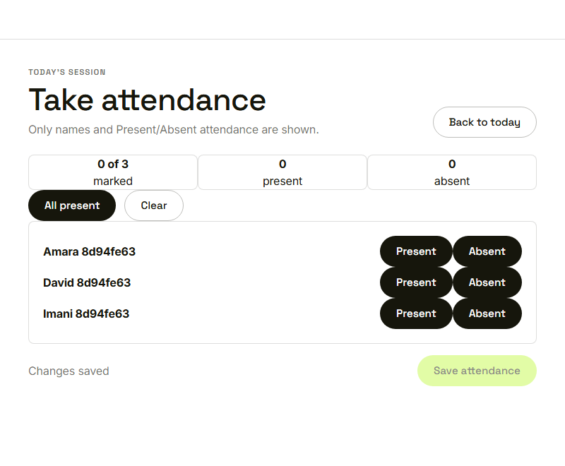
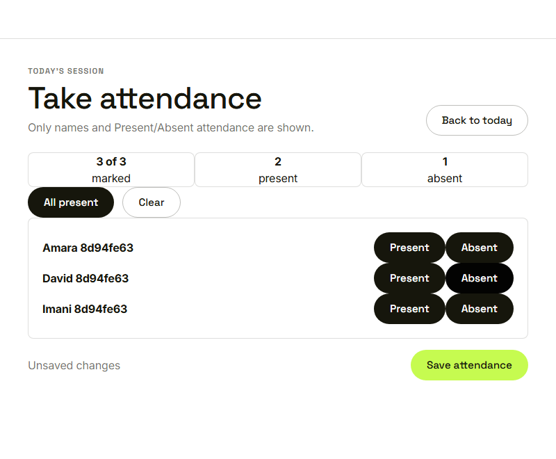
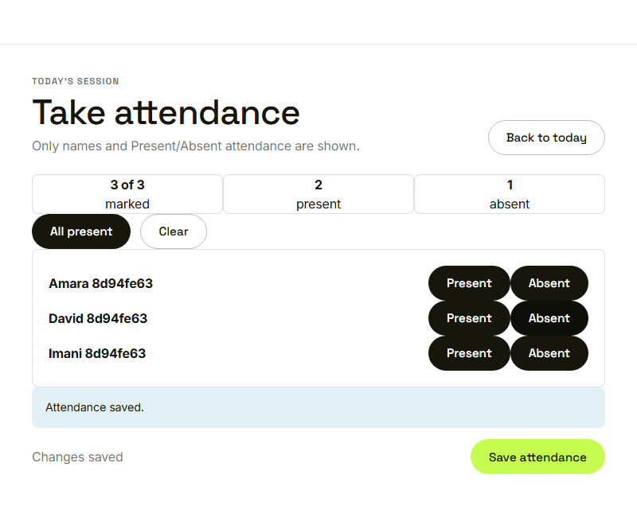
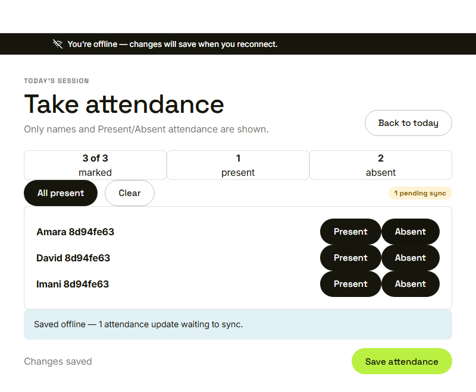
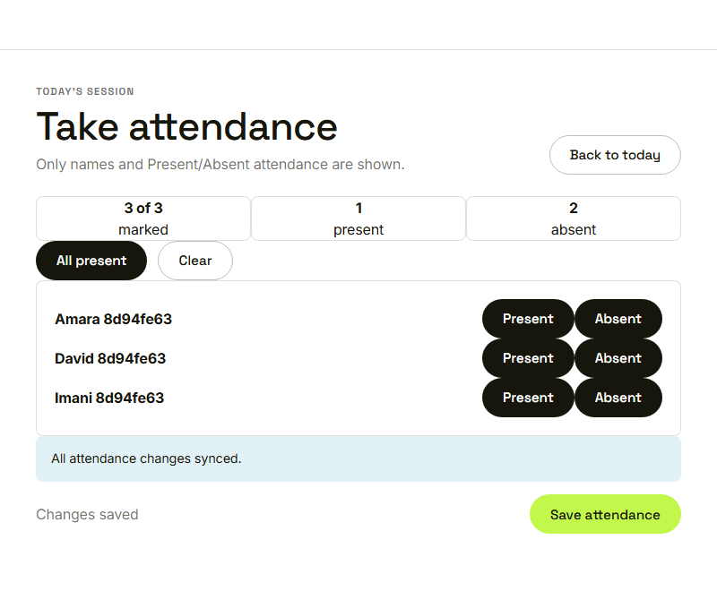

Waypoint · Video 064
Recording session attendance
Names only, present or absent
Names and nothing more

Only names and present or absent are shown
All present, then one absent

Three of three marked: two present, one absent
Attendance saved

Attendance saved
Saved offline, waiting to sync

Queued on the device
Synced once the connection returns

All attendance changes synced
Things to remember
- Names only, with present and absent for each
- All present speeds things up; tiles show the count
- Save is available once everyone is marked
- Offline changes queue and sync without loss or duplication